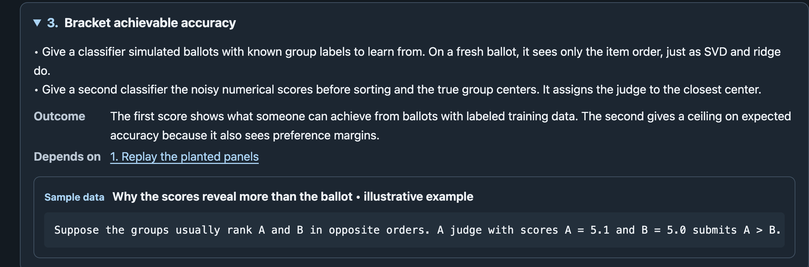

Follow the plan
Switch between the dependency diagram and a linked list. Open a step to see its outcome, prerequisites, and any decisions that need your input.
A CLI and skill for plan reviews
Render one structured JSON plan as complete Markdown for chat and a matching HTML preview for the browser. Follow dependencies, inspect examples, and leave feedback on the exact passage.

The review workflow
Switch between the dependency diagram and a linked list. Open a step to see its outcome, prerequisites, and any decisions that need your input.
Put plots, diagrams, tables, or literal sample output alongside the plan or the step they illustrate.
In a local review session, select text and add a comment. Edit saved drafts or jump back to their passages before submitting feedback as a batch.


Quickstart
With Python 3.11 or later and uv installed, clone the repository and render the included linear example. The CLI prints Markdown and opens the matching HTML preview.
git clone https://github.com/JWanderer73/Visual-Plans.git
cd Visual-Plans
uv sync --locked
uv run visual-plan render examples/linear.json --open